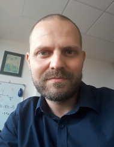

Previous
Lekce 18: Rastrové analýzy
O mně

Ing. Vojtěch Barták, PhD.
Katedra aplikované geoinformatiky a územního plánování, Fakulta životního prostředí, Česká zemědělská univerzita v Praze
Katedra informačních technologií, Unicorn University (Unicorn Vysoká škola s.r.o.)
Profil na ResearchGate
Previous
Lekce 18: Rastrové analýzy